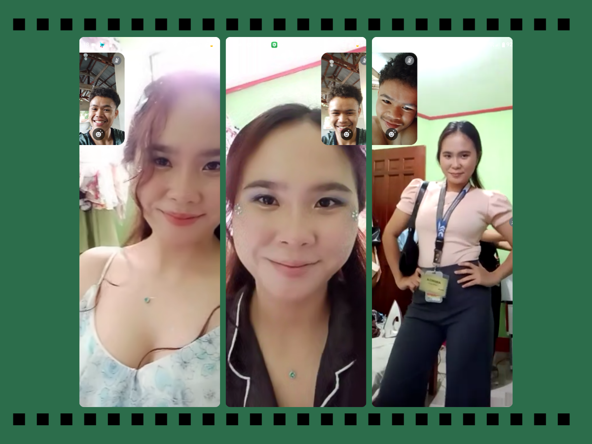
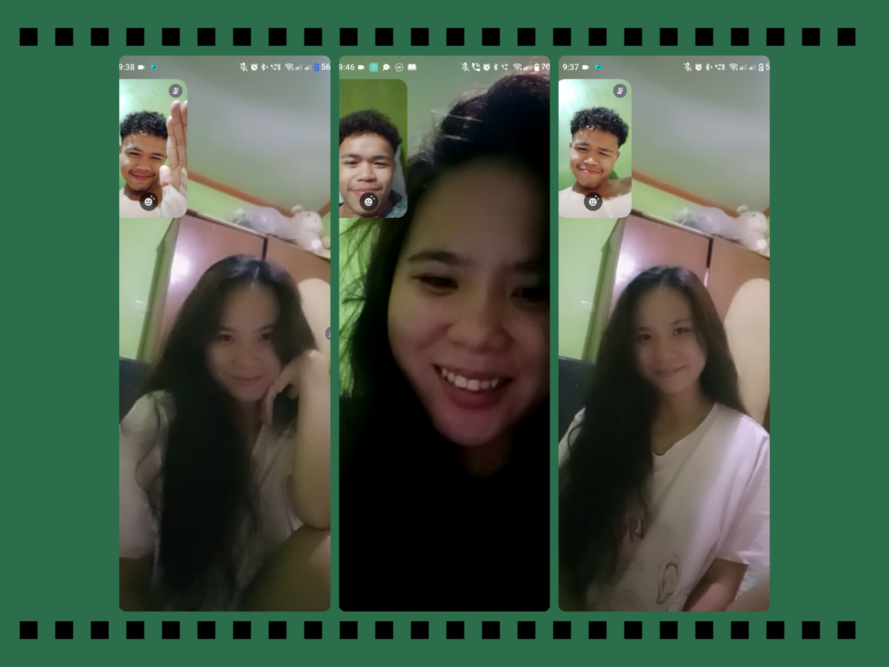
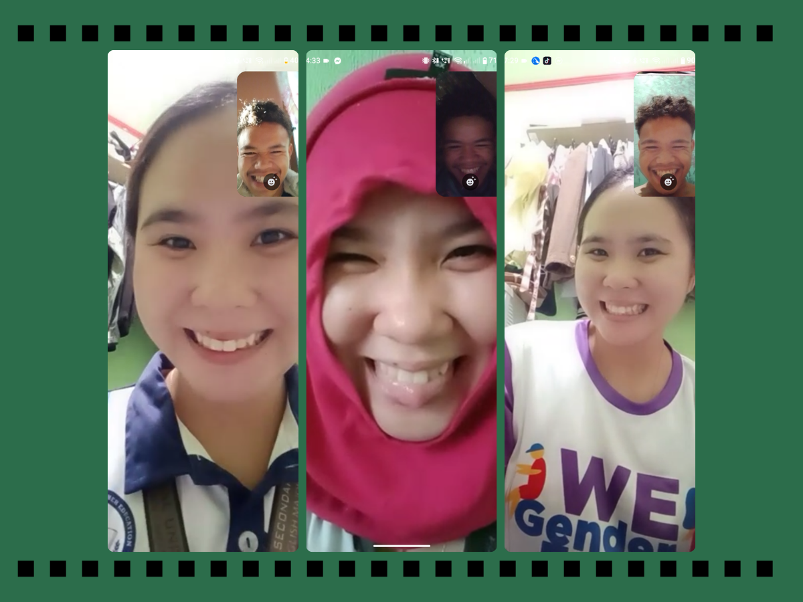
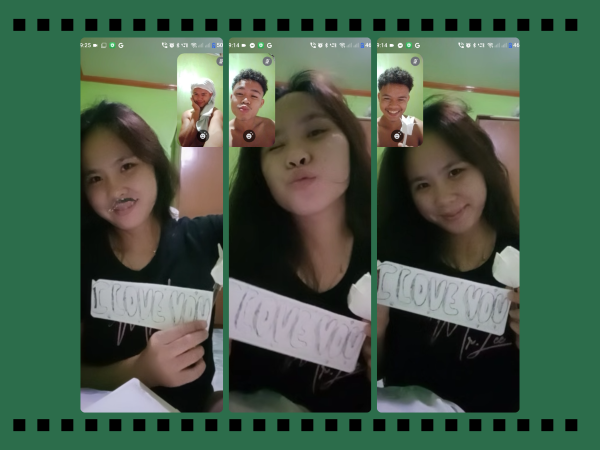

You make my world brighter,
just by being in it. 💚
My Dearest Shasha,
Happy 5th Monthsary, palangga nakooo!
Five months may seem short, but with you, every day feels like a lifetime. Thank you for being my peace, my happiness, and my greatest adventure.
Grabi, langga, mura ra jud og gi-time lapse ang atong five months, oii. Pero bisan pa og paspas ra kaayo ang panahon, daghan na kaayo tag memories nga akong i-treasure forever. From the days nga happy kaayo tang duha, nagkinatawanay, naghinilakay, ug nag-uban sa usag usa, hangtod sa tanan natong naagian within these five months. Dili lang kay sa five months, kundi sukad pa jud sa pagsugod sa atong story. And look at us now, palangga, we're still here, choosing each other and doing our best to make this relationship work. Bisan og daghan tag pagsulay nga maagian, padayon lang gihapon ta, ha? We may not be perfect, but I hope we never stop learning, growing, and loving each other.
Langga, even with the distance between us, you are the closest thing to home I have ever known. Daghan kaayo kog mga butang nga nasulayan ug naagian nga ikaw ra jud ang nakauban nako. Daghan kaayo tag first times, both yours and mine, nga nahimong special tungod kay kita ang nag-uban. Bisan sa calls ug chats ra ta usahay magkuyog, ma-feel gihapon nako nga duol kaayo ka sa akong kasingkasing. Distance may keep us apart physically, pero dili na makapugong sa gugma nga naa nako para nimo.
Ikaw akong pahulay sa tanang kakapoy nga akong maagian sa usa ka adlaw. And honestly, one of the things I look forward to the most every day is getting to talk to you, whether sa buntag or inig gabii. Bisan ordinaryo ra nga adlaw, bisan simple ra atong mga storya, you always find a way to make my day special. Sometimes, wala ra tay laing buhaton kundi magstorya ug magkatawa, pero para nako, those little moments mean so much. Kay dili man kinahanglan nga special ang adlaw para mahimong memorable, basta ikaw akong kauban.
Langga nako, pasensya jud kaayo kung usahay dili ko maayo mo-express sa akong feelings. Dili man gud ko perpekto sa pag-ingon sa akong gibati, ug usahay dili ko kabalo unsaon pag-explain kung unsa tika ka-love. Pero I hope you can feel it through my actions, my efforts, and the way I keep choosing you every day. Bisan dili ko pirmi kabalo sa saktong words nga akong isulti, I want you to know nga tinuod ug dako kaayo akong gugma para nimo.
Thank you for staying, for understanding me, for making me happy, and for being part of my life. Thank you for all the memories we've made and for all the little things you do that make me feel loved. I'm so grateful nga ikaw ang akong na-meet ug ikaw ang akong nakat-unan nga higugmaon in this special way.
I know nga daghan pa tag maagian in the future. There will be happy days, difficult days, misunderstandings, and moments nga mingawon kaayo ta sa usag usa. But I hope that through every season of our lives, we will continue to choose each other, understand each other, and remind ourselves why we started. I don't promise nga everything will always be easy, but I promise to keep learning, growing, and doing my best for us.
I will love you through every season of our lives, palangga nako. Through the good days and the bad days, through the distance and the waiting, and through every new chapter nga atong sugdan together. I hope these five months are only the beginning of a much longer and more beautiful story for us. More monthsaries to come, until these months turn into anniversaries, and hopefully, a lifetime of choosing each other.
Happy 5th Monthsary again, my dearest Shasha nga palangga nako! Thank you for being you, and thank you for being my person. If I could go back to the beginning, I would still choose to know you, love you, and build this story with you all over again
I love you today, tomorrow, and forever and always, palangga nakooo. More monthsaries, more memories, more first times, more laughter, and more years with you. Always us, langga nako. Hangtod sa atong mga pangandoy mahimong tinuod. I love you so, so much! 💚🌷😘
— Your Reyrey 💚




Different places, same hearts. 💚
I'm so grateful for you palangga nakoo. 💚
The past 5 months have been beautiful grabi jud bisan pa daghan pagsulay but thankyou so muchiee palangga nakoo ha, I'm even more excited for all the months and years ahead excited jud kaayou palangga heheheh.
More monthsaries to come, until they turn into anniversaries, and hopefully, forever na gyud ta. May it always be us, choosing each other, growing together, and loving each other through every season of our life. ♾️💚
Here's to more memories, more laughter, more video calls, and more beautiful moments together. No matter the distance, ikaw gihapon akong palangga, today, tomorrow, and always my one and only palangga. 💚🌷💚
Forever and ever, always us. I love youuu! 😘